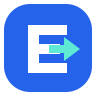

01
Momentum E
Minimal / Confident / Product-first

EduTrack
Every learner. Moving forward.
EduTrack
24px icon
A bold E with a forward arrow. A clean, app-friendly mark that connects education with momentum.
Open SVG — concept 01